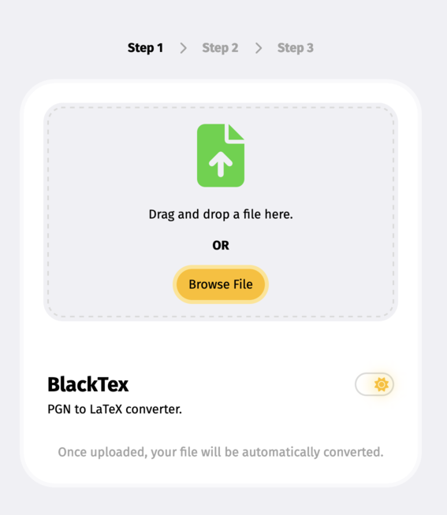

BlackTeX Project
BlackTeX is an innovative project that focuses on converting PGN files into LaTeX format. This tool is designed to take a PGN file as input and transform it into a beautifully formatted TEX file. It's a perfect solution for those who need to work with these file types and prefer the aesthetic and functionality of LaTeX documents.
